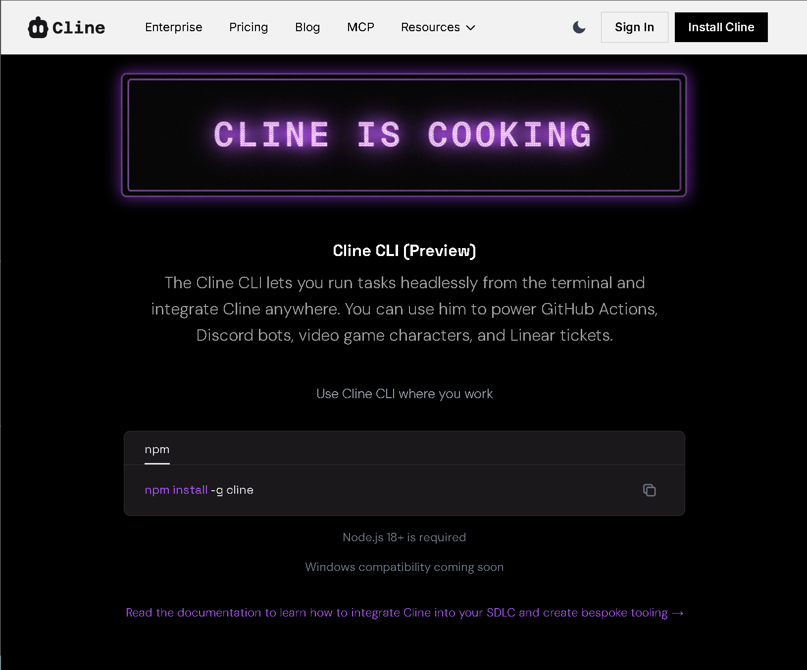

Desktop Tools
Software that helps developers write, test, and build apps
🛠️ What are Developer Tools?
These are programs that help people write code and build software. Don't worry if you're not a programmer—some of these tools can help you learn to code or even build simple apps without coding experience.
Think of them like specialized word processors for writing computer programs, except now many have AI built in to help you along the way.
Auth
Authentication for websites and apps. Add login with minimal code.
Browser AI
AI assistants and chat built into web browsers. Privacy-focused, contextual, no account required for many.
Computer automation (agents)
These systems run personal AI agents that can operate apps, shells, and browsers on your behalf. OpenClaw is the de facto pioneer: a full-featured, self-hosted stack where real UI control often goes through Playwright (Chromium automation — clicks, navigation, screenshots). Newer “claw” projects fork, slim down, or reimplement that idea for edge devices, Zig, Go, or hosted wrappers.
For agent integrations, Microsoft’s Playwright MCP exposes the same class of browser tools over MCP; the core library lives at playwright.dev.
Browser Tools
CLI
CLI = Command Line Interface. These are tools you use by typing commands (like in the movies when hackers type on black screens). They're powerful but take some learning. The AI-powered ones can actually understand what you want and help you.
curl -fsSL https://ampcode.com/install.sh | bash
→
Claude Code
Anthropic’s agentic CLI; multi-tool orchestration, MCP, permission modes, Docker sandboxing
→

Cline CLI Run tasks headlessly; power GitHub Actions, Discord bots, game characters, Linear tickets.npm install -g cline
→
CLIProxyAPI
Run coding CLIs against your Claude / Codex / Gemini / Qwen logins; local OpenAI-shaped proxy
→
Crush
Charm: agentic CLI; multi-model, LSP, MCP, sessions
→
Fresh
Terminal text editor with GUI habits: Ctrl+S / undo / find, mouse & selections, menus,
command palette, graphical settings, LSP; huge files (10GB+), low latency — also github.com/sinelaw/fresh
→
Gemini CLI
Google’s open-source CLI agent; build, debug & deploy with AI from the terminal; MCP, 1M token context
→
Gemini CLI GitHub
Source repo; 94k+ stars, Apache 2.0; contribute, issues, roadmap, docs
→
Goose
Block: open-source local agent & desktop; MCP extensions, many model providers,
shell & repo automation — Apache 2.0
→
Junie CLI
JetBrains: LLM-agnostic coding agent in the terminal, CI/CD, GitHub/GitLab (beta);
BYOK — same stack as Junie in IDEs
→
Kimi Code CLI
Moonshot AI: terminal agent; read/edit code, shell, MCP, ACP
→
Kilo Code
All-in-one agentic engineering platform; VS Code, JetBrains, CLI; #1 on
OpenRouter
→
Mistral Vibe
Mistral’s open-source CLI coding assistant; skills, MCP
→
NemoClaw
NVIDIA: sandboxed OpenClaw-style assistants in OpenShell; policy, egress control,
Nemotron inference; alpha preview — see docs.nvidia.com/nemoclaw
→
OpenCode
Open-source AI coding agent; terminal, desktop, IDE; 75+ LLM providers, LSP,
multi-session
→
OpenAI Codex CLI
OpenAI’s AI-assisted terminal with slash commands
→
OpenClaw
Self-hosted personal AI agent; chat apps (Slack, Discord, Telegram, WhatsApp, etc.),
browser & shell tools, skills/plugins; openclaw onboard; MIT — repo: github.com/openclaw/openclaw
→
Open Interpreter
Run LLMs in the terminal; execute code, browse, edit files; ChatGPT-like interface; pip install open-interpreter
→
Orbiton
Config-free TUI editor/IDE (o); single binary, VT100-friendly; Markdown, commits,
quick edits — github.com/xyproto/orbiton
→
Pi coding agent
Minimal terminal coding harness (Mario Zechner); 15+ providers, tree sessions, TypeScript extensions & skills;
npm install -g @mariozechner/pi-coding-agent — landing at shittycodingagent.ai
→
Qoder CLI
Terminal-native agentic coding; fix, review, automate; <70ms startup,
CI/CD
→
Qwen Code
QwenLM: open-source terminal agent; OAuth free tier, IDE integration
→
Roo Code
Open-source AI dev team; VS Code extension + Cloud agents; model-agnostic, role
modes
→
Codebase & research
Index, discover, and understand code repositories; AI-generated docs and search.
Coding Assistants
AI plugins and extensions for your existing IDE.
Coding plans
Subscription & API plans that plug into your existing IDE or CLI. Pay for model access (e.g. GLM-5) and use it in Cursor, Claude Code, Cline, Kilo Code, and more—one plan, many tools.
Debug & QA
Bug reporting and debugging tools that capture context automatically.
DevOps & containers
Game development
Browser based builder
Build and ship in the browser — no install: AI workspaces, autonomous engineers, and product builders that run in your tab (or a hosted cloud IDE).
IDE
IDE = Integrated Development Environment. Think of it as Microsoft Word, but for writing code instead of documents. These are full programs you install on your computer. Many now have AI assistants built in that can suggest code, fix errors, or even write entire functions for you.
brew install --cask opencode-desktop
→
PearAI
AI code editor; Agent (Roo Code/Cline) & Chat (Continue); PearAI Router for best models; Y Combinator
→
PyCharm
JetBrains Python IDE; AI Assistant, Junie agent, refactoring, scientific & web stacks
→
Qoder
Agentic coding platform: IDE, CLI, JetBrains; Editor & Quest modes, Repo
Wiki, MCP
→
RexIDE
IDE command center for AI agents; session-first, multi-project; ClaudeCode, Codex, OpenCode; terminals, code reviews
→
Rider
JetBrains .NET IDE; AI Assistant & Junie; Unity, Unreal, ASP.NET, cross-platform
→
TRAE
10x AI engineer; build software solutions independently
→
T3 Code
Minimal web GUI for coding agents; Codex-first, Claude Code soon; by theo gg; npx t3 or desktop app
→
Theia IDE
Eclipse Theia: AI-native, open-source IDE for cloud & desktop; open alternative to VS Code, Cursor; 3000+ extensions
→
Visual Studio
Microsoft’s full IDE for .NET, C++, game dev; GitHub Copilot built in; Windows & Mac
→
Visual Studio Code
Microsoft’s free editor; huge extension ecosystem — pair with GitHub Copilot, Cline, Continue, and other Coding Assistants on this page
→
Void
Open-source AI code editor (Voideditor); bring your own API keys; fork of the VS Code stack with agentic workflows
→
Warp
Agentic terminal & IDE; full terminal use, multi-model
→
WebStorm
JetBrains JavaScript/TypeScript IDE; AI Assistant, Junie, front-end & Node tooling
→
Windsurf
AI coding IDE; Cascade agent, Tab autocomplete, MCP, JetBrains plugin
→
Xcode
Apple’s IDE for Swift, iOS, macOS, visionOS; predictive code completion & AI-assisted features
→
Zed
High-performance code editor with AI built-in; Rust, native, multiplayer
→
Z Code
Simple, fast, vibe-ready AI agent; plan, code, review, deploy with your existing tools
→
Zencoder
Zenflow orchestration + agents; IDE, CLI, Zen Agents; spec-driven, parallel
execution, built-in verification
→
Local LLM runtimes
Run open models on your machine or server; keep data local.
Reference
npx ctx7 setup); version-specific
API context for Cursor, Claude Code, etc.
→
Design Arena
Community-driven AI design benchmark: vote to discover which AI is best at design
(website, image, video, UI)
→
Discord Developers
Build bots, apps, integrations; API, webhooks, rich presence
→
Elicit
AI for scientific research: find papers, extract & synthesize; 138M+ papers, reports, systematic review
→
findmypapers.ai
Semantic search for 300,000+ AI research papers; find, compare, explain with
citations
→
Firecrawl
Crawl & extract clean Markdown/JSON from sites for RAG and agents; API & MCP
→
Futurepedia
AI tools directory by category: productivity, video, text, image, audio, code, business
→
Gamma
AI design for presentations, documents & websites from text prompts; card-based layouts; pitch decks, slides
→
Glama MCP
Discover & inspect MCP servers; manifests, security signals, hosted MCP gateway
→
Georgetown Library AI Tools
Curated table: AI tools for research (Connected Papers, Consensus, Elicit, Keenious, Research Rabbit, scite, Scholarcy, Semantic Scholar, Undermind)
→
Grammarly
AI writing assistant: grammar, tone, clarity; works in Gmail, Word, Slack & more; free & Pro
→
HTML Online Viewer
Edit and preview HTML in the browser; format, highlight
→
Ithaka S+R GenAI Tracker
Generative AI product tracker for higher ed: teaching, learning, research; living list with pricing
→
Keenious
AI recommendation for academic articles from uploaded papers; 250M+ sources (OpenAlex); Word & Docs
→
MCP Directory
Discover 10,000+ MCP servers: PostgreSQL, Google Drive, Puppeteer, Brave Search, Slack, Fetch, Git, GitHub
→
Model Context Protocol (MCP)
Open standard (Anthropic) for AI ↔ tools & data; Cursor, Xcode use it
→
Playwright MCP
Microsoft: browser automation MCP for agents — navigate, click, screenshot, test UIs
→
Marketer Milk — 26 best AI marketing tools
Curated 2026 list: Gumloop, Surfer SEO, Notion AI, Jasper, Lexica, Crayo, Grammarly, Zapier & more; real use cases
→
Obsidian
Local-first Markdown notes & knowledge base; graph, Canvas, plugins; optional Sync
& Publish; free for personal use
→
OpenRouter
Unified API for hundreds of LLMs; one key for agents, apps, and experiments
→
Product Hunt
Product board: launch & discover new tech; AI, dev tools, startups; upvotes, community
→
Read AI
Meeting copilot: summaries, transcripts, action items; Zoom, Meet, Teams; Search Copilot across meetings, email, chat
→
Research Rabbit
Citation-based mapping; visual exploration of related papers & authors; OpenAlex, Semantic Scholar
→
scite
Find papers, search citations in context; supporting vs contrasting evidence; smart citation index
→
Scholarcy
Summarize articles into summary cards; read, share, annotate; for papers you upload or link
→
Semantic Scholar
Free AI-powered research tool; 233M+ papers; TLDR summaries; Semantic Reader (Ai2)
→
Smithery
MCP server registry & CLI — search thousands of servers, OAuth, npx @smithery/cli
→
Spec Kit
GitHub: Spec-Driven Development toolkit; specs become executable; Specify CLI,
works with Qoder, Cursor, OpenCode, etc.
→
Squoosh
Quick, simple image compression; Google; WebP, AVIF, resize
→
Saner.AI
AI personal assistant for ADHD: emails, notes, todo list; search, schedule & create; Techstars backed
→
There’s An AI For That
Directory of 45,800+ AI tools for 11,356 tasks; search, categories, just
released
→
Tavily
Search API tuned for AI agents & RAG; fast web answers with citations
→
Undermind
AI research assistant: refine questions, find relevant papers; traverses citation graph; Semantic Scholar
→
WebLLM
Run LLMs in the browser with WebGPU; MLC-ai; no server needed
→
Wikipedia Artificial Intelligence
Overview of AI: goals, techniques, applications, ethics, history
→
Wikipedia List of LLMs
Reference list of large language models with parameters, licenses, notes
→
Terminal
Terminal emulators — where you run the CLI. GPU-accelerated for speed; native UI; cross-platform or macOS-only apps built for agentic workflows.
Tunneling
Expose your local server to the internet without DNS or firewall config.
Voice & speech-to-text
Web builders
🚀 Best for beginners! These let you build websites and apps just by describing what you want—no coding required. The AI writes the code for you. Everything runs in your browser, so there's nothing to install. Just sign up and start creating.